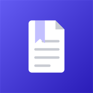
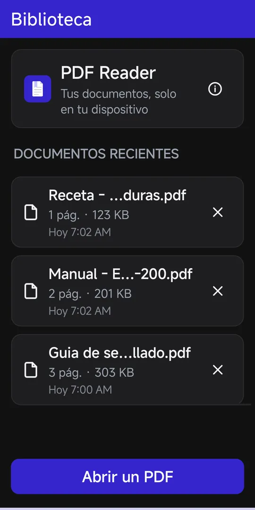
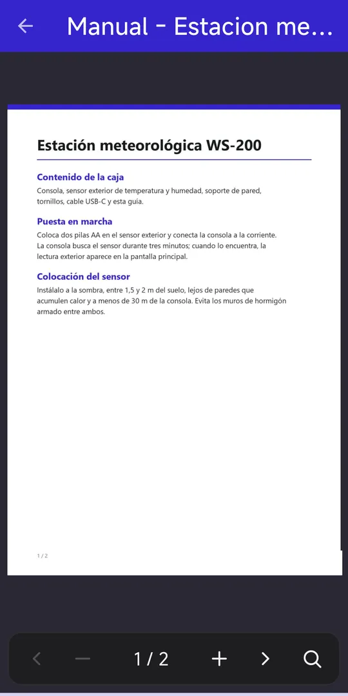

Soporte · PDF Reader
Cómo funciona PDF Reader, pantalla a pantalla, y qué hace cada opción.
En esta guía


También puedes abrir un PDF desde un gestor de archivos, el correo o el navegador con «Abrir con» › PDF Reader.
Barra inferior, de izquierda a derecha:
Gestos sobre la página:
Barra de búsqueda (Android 15 o superior):
Al abrir un PDF con contraseña aparece «PDF protegido: Introduce la contraseña de «nombre».» con una caja para la contraseña (oculta) y los botones Cancelar y Abrir. Si no es correcta, verás «La contraseña no es correcta. Inténtalo de nuevo.». La contraseña no se guarda: se pide cada vez que abres ese documento.
Si hay una versión más nueva: «Actualización disponible: Hay una versión más reciente (X). Tienes la Y. ¿Quieres actualizar?», con Actualizar (abre la página de descarga) y Ahora no.
La búsqueda de texto necesita Android 15 o superior. En versiones anteriores el botón no aparece.
Tu Android no permite descifrar PDF protegidos. Quita la contraseña del documento con otro programa o ábrelo en un teléfono con Android 15 o superior.
El archivo no es un PDF o está corrupto (por ejemplo, una descarga incompleta). Vuelve a descargarlo y ábrelo de nuevo.
Si borras los datos de la aplicación, la copia interna se pierde y la entrada se quita sola («El documento ya no está disponible y se ha quitado de la biblioteca.»). Tu archivo original sigue intacto: vuelve a abrirlo.
No. Solo se borra la copia que guarda la aplicación. El archivo original de tu teléfono no se toca.
Todavía está en prueba cerrada: solo se ve con el enlace de invitación de probadores. Mientras tanto puedes instalar el APK desde las releases de GitHub.
No. PDF Reader es solo un lector; esas herramientas se probaron un par de días en septiembre de 2026 y se retiraron.
Abre una incidencia en GitHub contando qué te pasa y con qué versión y dispositivo.